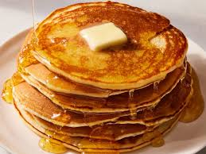

Pancakes

Are you ready to try the best pancakes recipe? Here you can find the procedure
Ingredients
- 100g plain flour
- 2 eggs
- 300ml semi-skimmed milk
- 1 tbsp sunflower oil
- pinch salt
Steps
- Put 100g plain flour and a pinch of salt into a large mixing bowl.
- Make a well in the centre and crack 2 eggs into the middle.
- Pour in about 50ml from the 300ml of semi-skimmed milk and 1 tbsp sunflower oil then start whisking from the centre, gradually drawing the flour into the eggs, milk and oil. Once all the flour is incorporated, beat until you have smooth, thick paste. Add a little more milk if it is too stiff to beat.
- Add a good splash of milk and whisk to loosen the thick batter. While still whisking, pour in a steady stream of the remaining milk. Continue pouring and whisking until you have a batter that is the consistency of slightly thick single cream.
- Heat the pan over a moderate heat, then wipe it with oiled kitchen paper.